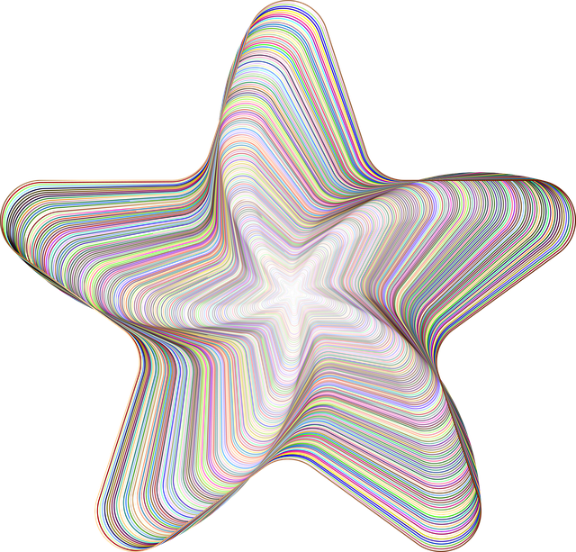

Hans Kazàn
Kazàn werd geboren als Hans Mulders. Op zijn negende kreeg hij een goocheldoos van Sinterklaas en vanaf die tijd is hij met goochelen bezig. Hij gaf zich op bij een goochelclub en moest een artiestennaam opgeven. Hij bedacht 'ka' van Fred Kaps, 'zan' van de Italiaanse goochelaar Remo Inzani en het accent op de tweede a om niet op een hondennaam te lijken. Sindsdien heeft hij zich altijd van deze naam bediend, ook op school. Omdat hij met zijn beide ouders in onmin is gevallen, heeft hij zijn achternaam officieel laten wijzigen in Kazàn.
